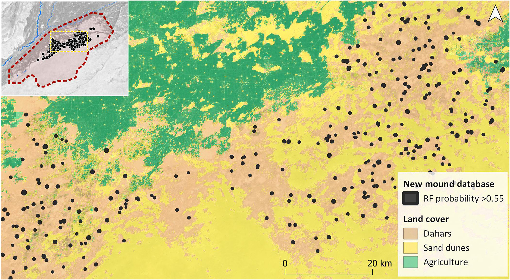

4 Policy
4.1 Summary
4.1.1 Heritage Conservation in London
The City of London is the ancient core from which the rest of London developed and is governed by the oldest local authority in the country(“Historic Environment,” n.d.). Its origins date back to before parliament and it has been an important center for settlement, commerce, and ceremony since Roman times. There are a high number of designated heritage assets in the City of London. It boasts a large number of designated heritage assets, including 600 listed buildings, 27 conservation areas, 48 scheduled ancient monuments, and four historic parks and gardens. Therefore, it is significant to conserve the heritage in London.
4.1.2 Policy
Local
Identify important heritage and avoid/minimize harm on them.
HC1.D Heritage Conservation and Growth
- Development proposals should identify assets of archaeological significance and use this information to avoid harm or minimise it through design and appropriate mitigation.
International
UNESCO-World Heriatge Convention
World Heritage sites must be preserved and improved to maintain their unique qualities and historical accuracy.
3.1 Protection, conservation and management of World Heritage properties
- Protection and management of World Heritage properties should ensure that their Outstanding Universal Value, including the conditions of integrity and/or authenticity at the time of inscription, are sustained or enhanced over time.
4.1.3 Activities
Local
North Tottenham Townscape Heritage Initiative (THI)
Improve the appearance of historic buildings with good quality design and encourage people to shop
Provide opportunities for local people to learn about the heritage of Tottenham and become involved in its restoration and maintenance
Create an attractive environment that people can take pride in
International
The World Heritage Cities Programme
- Develop a theoretical framework for urban heritage conservation
- Provide technical assistance to States Parties for the implementation of new approaches and schemes
4.1.4 Limitations
While there are numerous policies governing heritage conservation and monitoring, there has yet to be a policy specifically addressing the identification, monitoring, and protection of heritage sites.
4.2 Application
4.2.1 Discovering Heritage
Thanks to remote sensing, we could now identify surface features that may indicate the presence of hidden relics, as well as detect underground archaeological remains using infrared and thermal electromagnetic radiation.
The use of satellite imagery has been crucial in decreasing uncertainty regarding the condition of heritage assets(Tapete and Cigna 2018). For example, Orengo et al. (2020) used Sentinel-1 and Sentinel-2 data to detect archaeological mounds in Cholistan Desert area(Pakistan), known for its Bronze-Age Indus Civilization. They used a combination of SAR and optical bands to detect archaeological mounds from that era. Their research showed more mounds over a larger area than previously recorded (Figure 1) and suggested a continuous shift of settlements due to changes in climate and hydrological networks throughout history.

4.2.2 Monitoring and Conserving Heritage
Satellite images can be used to monitor valuable heritage sites that are at risk of damage or destruction from climate change and natural hazards such as coastal erosion, urban sprawl, or land deformation.
Tzouvaras et al. (2019) used Sentinel-1 SAR images to map the effects of an earthquake on two UNESCO heritage sites in Cyprus: Nea Paphos and the “Tombs of the Kings”. By utilizing a Differential Synthetic Aperture Radar Interferometry (D-InSAR) methodology, they found that while there was little displacement on the UNESCO sites, negative vertical displacement occurred in certain parts of the historical city of Paphos. These maps(i.e. Figure 2) can provide quick and precise information to local authorities, enabling them to preserve the heritage sites to the greatest extent possible.

4.3 Reflection
Through the class and case study, I have learned that remotely sensed data can be a powerful tool for heritage monitoring and conservation. The combination of satellite and aerial imagery, coupled with machine learning techniques, can provide policymakers with valuable insights into the most effective strategies for heritage conservation, regardless of the natural environment where the heritage sites are located.
Considering the reality of London, a significant portion of its heritage sites are buildings located within the city. It is likely that more studies could utilize UAVs, street imagery, or SAR to monitor and preserve these heritage sites in the future. Such studies can provide policymakers with valuable insights into the current condition of the heritage sites and help identify potential risks or threats to their preservation, allowing for effective preservation measures to be implemented.